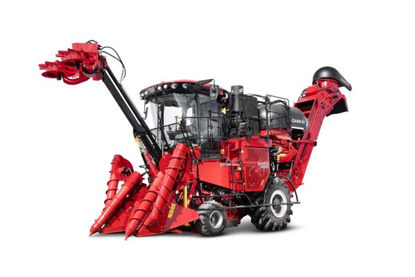

Austoft 9000
CATEGORIAS: CASE IH, COLHEITADEIRAS DE CANA
A colhedora Austoft 9000 representa um avanço significativo na colheita mecanizada de cana-de-açúcar, proporcionando maior qualidade e produtividade. Com um motor mais potente e um sistema hidráulico inteligente, destaca-se pela eficiência operacional com custos reduzidos.
Seu novo chassi modular aparafusado, combinado com um motor de 420 cv, resulta em **10% a menos de consumo de combustível**. Além disso, a Austoft 9000 incorpora tecnologias de ponta, como o Piloto Automático AFS e um sistema de telemetria com conectividade 4G. Essas inovações visam aprimorar a produtividade, proporcionando alta precisão no agronegócio.
Conectividade e Gestão em Tempo Real
A conectividade é elevada com o sistema de telemetria **AFS Connect 4G**, oferecendo três anos de assinatura de transmissão e transferência de dados. Esse sistema permite a gestão integrada do negócio, com ferramentas para Monitoramento de Frota, gestão agronômica e gerenciamento de dados.
Projetado para facilitar tomadas de decisão em tempo real, o AFS Connect fornece dados que podem ser integrados diretamente aos sistemas de gestão ERP ou BI, proporcionando maior eficiência operacional.